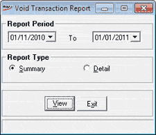

The report shows details of the stock transactions that were edited or cancelled due to some reason, along with the details of the revised documents or void transactions.
How to reach: Reports > Stock > Void Transactions
The Void Transactions Report selection window is as shown.

Report Period: Select the date range for which the report is to be generated.
Report Type: Select Summary or Detailed, to view the report accordingly.